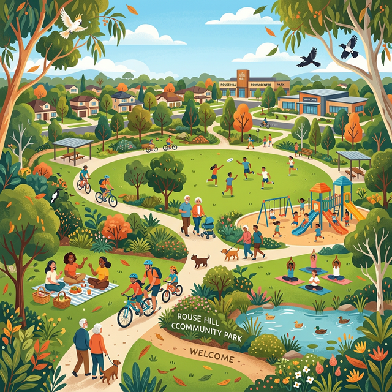

Littering has become a growing issue in Rouse Hill — affecting our parks, wildlife, and community spaces. This website uses real data, community voices, and interactive media to explore the impact and drive change.
Join us in making Rouse Hill a cleaner, greener place for everyone.

Three pillars guide everything we do — from research to real-world action.
Collect real data from surveys, public datasets, and resident reports to understand where and how littering happens most.
Raise awareness about the long-term environmental and social effects of improper waste disposal through media and storytelling.
Implement community-driven solutions — clean-up events, more bins, better signage, and smarter reporting tools.